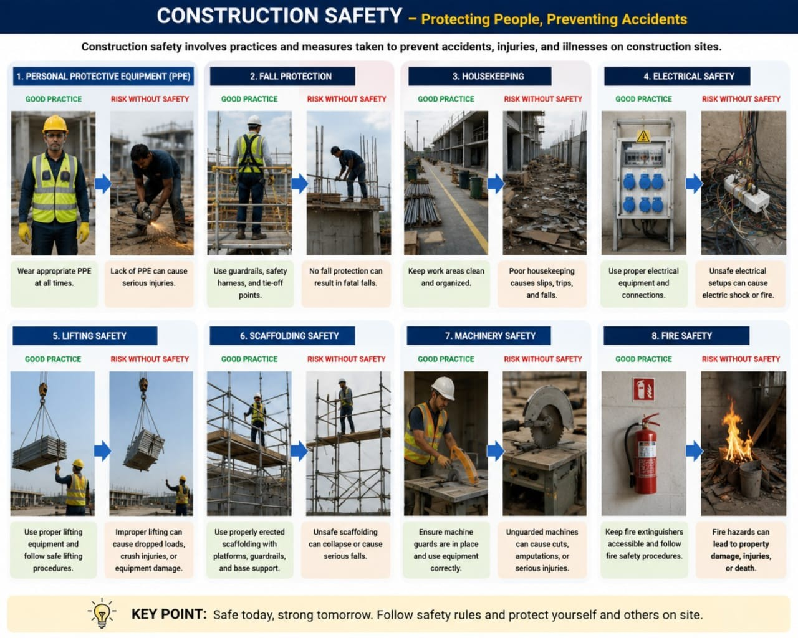

Introduction
Construction safety refers to the measures, procedures, and practices implemented to protect workers,
equipment,
and the public from accidents and hazards on construction sites.
Objectives of Construction Safety
- Prevent accidents and injuries.
- Protect workers and site visitors.
- Ensure compliance with safety regulations.
- Promote a safe working environment.
- Reduce project delays caused by accidents.

Common Construction Hazards
- Falls from heights.
- Falling objects.
- Electrical hazards.
- Machinery and equipment accidents.
- Slips, trips, and falls.
Safety Measures on Construction Sites
- Use of Personal Protective Equipment (PPE).
- Proper training and supervision of workers.
- Regular safety inspections.
- Safe handling of tools and equipment.
- Clear safety signs and warnings.
Benefits of Construction Safety
- Reduced workplace accidents.
- Improved worker productivity.
- Lower medical and compensation costs.
- Better project performance.
- Compliance with legal requirements.